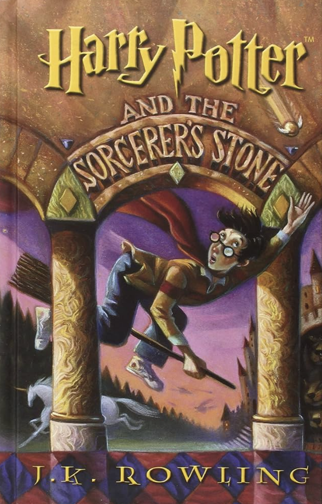
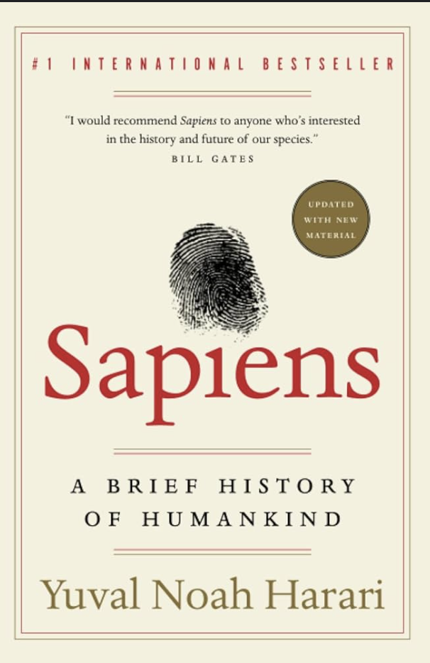

The last trip I took to the South of France with my dad was as memorable as can be. We spent a week there and visited three different small towns while enjoying coffee and looking at the beautiful scenery. My favorite part of the trip was visiting the small market in Cassis and doing a boat trip around the landscape.
My favorite pet names for a cat, dog, and fish are:
My favorite restaurant is in San Diego and it's called Duke's. Not only is the food great, but what makes it spectacular is how the restaurant balcony overlooks the water and the cliffs of La Jolla. If you go, you should try the Hula Pie!
My favorite food is steak and I love it cooked rare or medium rare!
| Harry Potter and the Sorcerer's Stone |  | J.K. Rowling | This book is about Harry Potter, a boy who learns on his eleventh birthday that he is the orphaned son of two powerful wizards and possesses unique magical powers of his own. |
| The Personal MBA | Josh Kaufman | This book is about mastering the art of business and takes learnings from various MBA programs. | |
| Aware | Daniel j. Siegel | This book is a meditation guide that explores different practices and how to incorporate meditation into every day life. |
|
| Sapiens |  | Yuval Noah Harrari | This book is a summary of the history of homo sapiens, spanning from when we insignificant apes up until now where we possess God-like technology. |